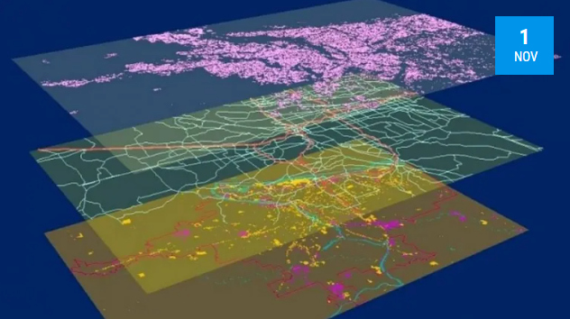
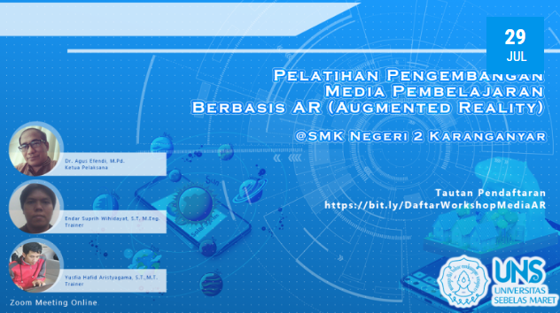
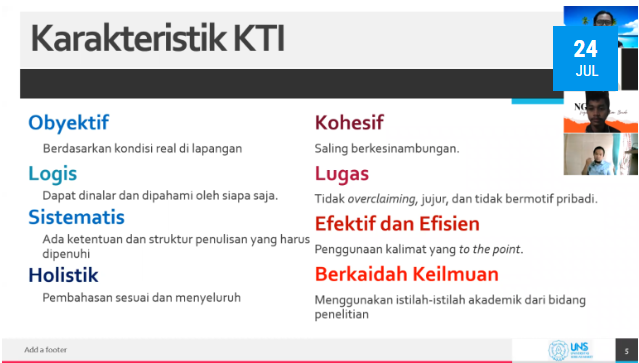
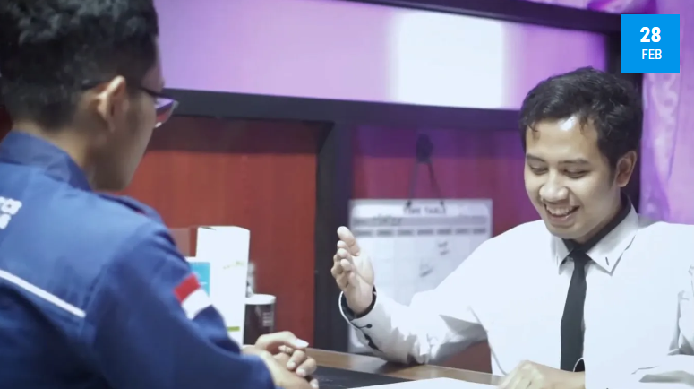
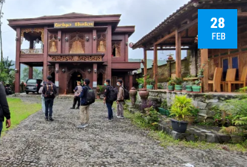
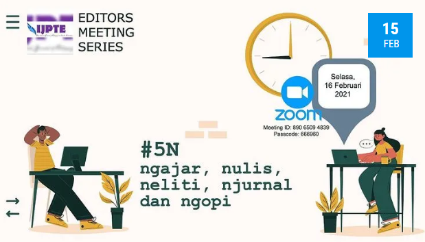

Startups Created By BIE/PTIK
UNS Innovation Hub or better known as iHub is a division under the “Direktorat Inovasi dan Hilirisasi”, Universitas Sebelas Maret. iHub focuses on startup development programs and the management of the UNS business incubator.

PTIK Study Program Service Activities Develop Web-Based GIS Applications
The PTIK Study Program FKIP UNS held a partnership with the Matesih Village Government which aims to encourage the digitization process of mapping the potential and problems that exist in Matesih Village.
Windows 11 Is Released, Should We Update Or Stay?
On October 5th, 2021, Microsoft announced that Windows 11 can be downloaded on some Windows 10 devices for free.

PTIK Community Service Team Holds Augmented Reality Learning Media Development Workshop
The Community Service Team of the Informatics and Computer Engineering Education Study Program (PTIK) held a workshop entitled “Training for Development of Augmented Reality Learning Media”.

NGOPIDAY KTI Writing Bootcamp
NGOPIDAY (Ngomongin Penelitian Ilmiah Day) is an activity in order to increase student interest in research for the future so that it is expected to be able to compete in competitions or other competitions.

Profile Video Branding PTIK 2021 With The Spirit Of Competition
In order to enliven the anniversary competition of Sebelas Maret University, PTIK FKIP released a new PTIK Video Profile.

Community Service To Kemuning Village With Permikomnas
This community service activity was held by Permikomnas (Perhimpunan Mahasiswa Informatika dan Komputer Nasional) in the context of service to SVN (Smart Village National).

The 1st Edition Of Editor Meeting Series/h3>
IJPTE (International Journal of Pedagogic, Teaching and Education) – UNS, presents The 1st Edition of Editor Meeting Series.